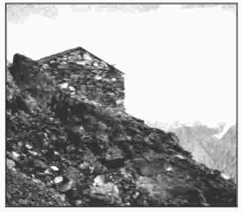

Г.П. Долженко, А.И. Яицкова
Южный федеральный университет
О ДЕЯТЕЛЬНОСТИ ОБЩЕСТВЕННЫХ ДОБРОВОЛЬНЫХ ОРГАНИЗАЦИЙ ПО РАЗВИTИЮ ЭКСКУРСИОННОГО ДЕЛА И ВЫЕЗДНОГО
ТУРИЗМА В РОССИЙСКОЙ ИМПЕРИИ
В НАЧАЛЕ XX ВЕКА
В статье рассматривается деятельность Российского общества туристов, Русского горного общества, различных комиссий, комитетов, учебных заведений по развитию экскурсионного дела и выездного туризма в Российской империи. Подчеркивается доступность участия в туристских поездках за рубеж для всех граждан страны. Самой популярной страной у российских путешественников последние сто лет является Франция и ее столица – Париж.
Ключевые слова: Российское общество туристов, экскурсионные комиссии, комитеты, выездной туризм, Франция, Альпы, Казбек.
G.P. Dolzhenko, A.I. Yaitskova ABOUT ACTIVITY OF PUBLIC VOLUNTARY ORGANIZATIONS FOR
THE DEVELOPMENT OF EXCURSION BUSINESS AND OUTBOUND TOURISM IN THE RUSSIAN EMPIRE IN THE BEGINNING OF
XX CENTURY
The article discusses the activities of the Russian society of tourists, the Russian mountain society, various commissions, committees, and educational institutions for the development of excursion business and outbound tourism in the Russian Empire. The article emphasizes the accessibility of participation in tourist trips abroad to all citizens. The most popular country is France and its capital Paris.
Keywords: Russian society of tourists, tour commissions, committees, outbound tourism, France, the Alps, the Kazbek.

© Долженко Г.П., Яицкова А.И., 2016
Долженко Геннадий Петрович, к.геогр.н., доцент кафедры туризма Высшей школы бизнеса Южного федеральный университета (ВШБ ЮФУ), почетный член Национальной Академии туризма, dolzenko@rsu.ru
Яицкова Алена Игоревна, студентка 4 курса Института социологии и регионоведения ВШБ ЮФУ, г. Ростов-на-Дону, yaitskova_a@mail.ru
В начале XX в. в Российской империи действовало несколько десятков организаторов экскурсионной деятельности и выездного туризма. Туристские поездки за рубеж проводились Российским обществом туристов, созданным в 1895 г. в Санкт- Петербурге, Русским горным обществом (1901 г., Москва), экскурсионной комиссией Общества распространения технических знаний (1908 г., Москва), а также рядом более мелких добровольных объединений любителей экскурсий и путешествий [1].
Российское общество туристов и выездной туризм
Самым крупным добровольным объединением было Российское общество туристов. Численность членов Общества росла до 1903 г., когда она достигла 2061 человек. Однако в 1904 г. его численность уменьшилась на 40%. А к 1917 г. сократилась до 500 человек.
Согласно Уставу Общества, его основной целью было
«…содействовать развитию туризма вообще и туризма велосипедного, в частности». Основными задачами Общество считало проведение коллективных поездок своих членов, организацию гостиниц в разных городах России и за рубежом для приема туристов-членов РОТ, помощь в разработке туров.
Деятельность РОТ началась с организации туристских путешествий по России. Ниже приводится в качестве примера два маршрута из десяти эталонных туров РОТ, которые предлагались всем желающим.
Маршрут РОТ №2 «Кавказский»
Москва – Ростов-на-Дону – Владикавказ – по Военно- Грузинской дороге до станции Казбек – Тифлис – Боржоми – Батуми – Новый Афон – Новороссийск – Москва. Продолжительность - 30 дней
Маршрут РОТ № 3 «Финляндия. Южный»
Москва – Санкт-Петербург – Выборг – Сайменский канал
– оз. Сайма – поездка по озеру и на Иматру - Гельсингфорс Ганге – Або – Санкт-Петербург. Продолжительность - 21 день
Определенная роль в работе Общества придавалась также организации поездок своих членов в одиночку или небольшой группой в два-три человека в зарубежные страны. Маршруты таких путешествий составлялись индивидуально.
Для облегчения пребывания членов Общества за границей, его руководство заключило дружеские договора с Бельгийским, Французским, Австрийским, Английским, Итальянским и рядом других туринг-клубов, а также со Всеобщим Нидерландским союзом велосипедистов.
На основании заключенных договоров иностранные общества предоставляли членам РОТ при посещении их стран те же преимущества, которые имели туристы этих государств: в приобретении проездных билетов, при размещении в гостиницах, получении за минимальную плату изданий по туризму, доступных лишь членам общества, ремонте велосипедов в мастерских и т.д. Кроме того, правление РОТ добилось, чтобы по распоряжению российского, бельгийского, швейцарского и итальянского министров финансов члены РОТ пользовались таможенными льготами.
Альпы - Кавказ: передача опыта организации путешествий
«Чуден мир красот горных массивов. Лес, вода и снег и формы гор ласкают взоры, и красота и разнообразие ландшафтов издавна привлекают в горы живописцев», - так с восхищением всегда говорил о горах Александр Карлович фон Мекк, создатель Русского горного общества.
Пройдя разными маршрутами по альпийским долинам, поднявшись вместе с членами Английского, Французского и других альпийских клубов на горные пики, он был покорен красотой гор. А побывав затем на Кавказе в районе Эльбруса, Казбека, Безенгийской стены, фон Мекк влюбился в эту горную страну и решил создать горное общество в России. Почти три года ушло на утверждение устава общества. В конце концов его причислили к департаменту Министерства земледелия и разрешили открытие. В 1901 г. Русский горный клуб был открыт.
А.К. Мекк организует работу общества по образцу западно-европейских альпийских клубов. Первое, что делает правление клуба, это разрабатывает альпинистские маршруты различной трудности и строит на склоне Казбека хижину, чтобы можно было спрятаться горовосходителям в случае непогоды. В
Альпах хижина на пути к вершине - это обычное явление, а в России РГО создавал первую подобную хижину [2].

Рис. 1. Ермоловская хижина
Хижина была сооружена из камня и извести, слегка оштукатурена внутри, покрыта железной крышей и имела внутри размеры в 4 аршина (2,84 м.) длины на 3 аршина (2,13 м.) ширины. Рассчитанное на трех человек, это помещение нередко давало приют значительно большему числу горовосходителей.
Также по примеру Альп РГО разработало
«Проводническую» книжку и жетон. Выдавали их только тем людям, которые по свидетельству членов общества, заслужили этого.
Горное общество, как и РОТ не устраивало многочисленные коллективные выезды своих членов в горы. Обычно путешествия совершались в одиночку или небольшими группами в 2-4 человека. Излюбленным районом путешествия являлись все территории Кавказа – от Дагестана до Карачая. Крайне популярным среди туристов было восхождение на Казбек.
Члены горного общества совершали поездки в Альпы также небольшими группами в 2-3 человека. За время туристского путешествия участники обязательно посещали Шамонь – туристскую и альпинистскую столицу Французских Альп и столицу Франции Париж.
Лидер по отправке туристов за рубеж
Большой вклад в развитие в России поездок за рубеж внесла экскурсионная комиссия учебного отдела Общества распространения технически знаний. Созданная в 1908 г., она за 5 лет, до начала Первой мировой войны, помогла побывать в зарубежных странах 7217 любителям путешествий. Среди них было 4500 учителей из различных городов России.
С каждым годом росло число групп, выезжающих за границу по маршрутам экскурсионной комиссии учебного отдела ОРТЗ. В 1913 г. общество организовало несколько туров по европейским странам и в Японию. Продолжительность поездок в европейские туристские центры составляла от 22 до 42 дней, в Японию – 60 дней.
Стоимость путешествий была умеренной, вполне по средствам педагогам школ и различных училищ. Так, участники 22-дневного тура по маршруту Москва – Берлин – отдых в горах Саксонской или Богемской Швейцарии – Дрезден – Калиш должны были уплатить от 60 до 75 руб. (при этом месячная зарплата учителя гимназии в то время составляла 85 руб.). Разница объясняется тем, что учителя начальных, сельских и городских училищ, а также фельдшерский персонал пользовались правом проезда по более низкой цене[3].
Кроме того, существовала особая скидка для народных учителей, направляемых в поездку земскими или городскими самоуправлениями.
Стоимость одного дня для экскурсантов на всех маршрутах, организуемых экскурсионной комиссией ОРТЗ, составляла от 3 до 5 руб.
Роль экскурсионных комиссий, бюро, комитетов в развитии выездного туризма в России
Повышенный интерес к экскурсиям, возникший в России в различных слоях населения к 10-м гг. XX в. явился толчком к
созданию при ряде обществ учебного характера экскурсионных комиссий, бюро, комитетов (таблица 1).
Таблица 1
Экскурсионные комиссии, бюро, комитеты в различных обществах России
Города | Добровольные общества | Комиссии, бюро, комитеты |
Москва | Московское общество грамотности | Комиссия по приему экскурсий |
Москва | Управление Московского учебного округа | Экскурсионная комиссия |
Петербург | Постоянная комиссия по устройству курсов для учителей | Комитет по приему экскурсий |
Петербург | Санкт-Петербургское общество народных университетов | Экскурсионная комиссия |
Харьков | Харьковское общество любителей природы | Экскурсионное бюро |
Екатеринодар | Общество взаимопомощи учащим и учившим в Кубанской области Черноморской губернии | Экскурсионное бюро |
Ярославль | Общество «Молодая жизнь» | Экскурсионная комиссия |
Владивосток | Общество «Приморский экскурсант» | Экскурсионный комитет |
Вятка | Общество содействия народному образованию | Экскурсионная комиссия |
Сумы | Сумское реальное училище | Общество организации путешествий учеников Сумского реального училища |
Они взяли на себя функции содействия экскурсионным группам и отдельным экскурсантам при знакомстве со столицами и губернскими городами. Так, комитет по приему экскурсий в Петербурге при Постоянной комиссии по устройству курсов для учителей за плату в 20 коп. в сутки с человека предоставлял экскурсантам помещение с кроватями и матрацами, прислугой и кипятком для чая.
Комитет давал все необходимые справки для планомерного осмотра Петербурга, указывал руководителей по
естественным и художественно-историческим музеям, содействовал получению билетов в театры, указывал столовые и пр.
Кроме экскурсионных организаций при различных обществах появились и частные туристские конторы, основанные отдельными предпринимателями. За образец все брали уже хорошо известную английскую контору «Cook and Son». Предприниматели, действующие как самостоятельные юридические лица, предлагали свои услуги при проведении экскурсий России и за рубеж [4].
К концу 1915 г. в России существовало уже около 100 аналогичных организаций, многие из которых организовывали экскурсионные поездки за рубеж.
Экскурсии по России и поездки за рубеж российских учащихся
В начале XX в. во многих учебных заведениях Российской империи педагоги осознали необходимость ведения экскурсий в программы обучения, рассматривая их как эффективную форму приобретения знаний. Учебные заведения проводили занятия по экскурсоведению. Приводим несколько программ по экскурсоведению различных гимназий и реальных училищ разных городов России.
Житомир. Житомирская гимназия, начав с однодневных прогулок своих учеников в окрестностях города, отправила их затем в маршрут по Волыне, а позднее в Нижний Новгород на выставку, на Кавказ, в Батуми, Севастополь, Одессу. Организовывала и поездки в Западную Европу. Самое большое путешествие ее учащиеся совершили в 1897 г., когда группа из 17 гимназистов посетила Вену, Мюнхен, Цюрих, Милан, Геную, Флоренцию, Венецию. В последующие годы гимназия не раз организовывала поездки да рубеж для своих учащихся.
Киев. Большой продолжительностью – по месяцу и более
- отличались экскурсии 5-й Киевской гимназии. Крым, Ялта, Карпаты, Львов, Санкт-Петербург, Новгород постоянно посещались гимназистами. За рубежом любимыми городами были Вена, Париж, Берлин.
Сумы. В Сумском реальном училище дирекция поддержала инициативу создания «Общества организации
путешествий учеников Сумского реального училища». Учащимися был разработан устав Общества, согласно которому его целью была организация экскурсионных поездок по России и в зарубежные страны. Первое путешествие было проведено по Кавказу, а затем в Финляндию.
Благовещенск и Владивосток. На востоке России ученики Благовещенска и Владивостока, организуемые Российским обществом туристов, совершали экскурсии по реке Амур, Усурийской тайге, к морю. В период работы в Японии в Осаке Международной промышленной выставки в 1903 г. Владивостокское представительство Российского общества туристов провело для детей городских и народных школ 20-ти дневную образовательную экскурсию в этот японский город как для знакомства с выставкой, так и историей, и культурой страны [5].
Московская губерния. Значительную помощь в организации экскурсий с учащимися оказывали земства Московской губернии. Так, в 1914 г. они выделили для экскурсий сельских школьников в общей сложности 10 тыс. руб. Кроме того, Московское губернское земство обеспечило экскурсантов завтраками и ужинами на сумму 14 коп. в день на человека, взяло на себя оплату осмотра учреждений, входивших в экскурсионный маршрут, проезда на пароходе по Москве-реке в размере 5 коп. на человека в день и половину стоимости проезда по железным дорогам экскурсантов из четырех наименее обеспеченных или отдаленных уездов: Верейского, Волоколамского, Можайского и Рузского.
Всего услугами земств Московской губернии в 1914 г. воспользовались 393 школы. Почти 14 тыс. школьников посетили Москву, где познакомились с Кремлем, Оружейной палатой, Этнографическим музеем, художественной галереей, аэродромом, панорамой «Бородино» и др.
Наиболее значительной в развитии экскурсионного дела в сельских школах была роль Московского уездного земства. Так, в 1913 г. оно способствовало проведению экскурсий для учеников из 152 школ Московского уезда (75% всех школ). В них приняло участие 40% учеников – 6 708 человек [6].
Большую роль в развитии экскурсионного дела в учебных заведениях России сыграло Министерство народного образования. В 1900 г. 2 августа Министерство издало циркуляр, который отменял каникулярные летние работы учеников и взамен их рекомендовал начальникам учебных заведений организовать в период каникул для учащихся оздоровительные прогулки и путешествия.
Заметное значение в развитии экскурсионного дела в России имело также введение специального тарифа №6900 от 9 марта 1902 г. на проезд учащихся, отправляющихся в образовательные экскурсии. На всех российских железных дорогах для групп экскурсантов устанавливался удешевленный проезд в вагонах третьего класса, а воспитанникам низших учебных заведений при поездках на расстояние до 50 км предоставлялся бесплатный проезд.
Все это создало благоприятные условия для развития экскурсий по стране и поездок в зарубежные страны. Роль экскурсий, как по России, так и за границу в повышении образования педагогов высоко была оценена на 2-м съезде учительских обществ взаимопомощи имени К.Д. Ушинского, состоявшемся в 1913 г.
В резолюциях другого съезда, 1-го Всероссийского съезда по улучшению отечественных лечебных местностей, состоявшимся в Петрограде 7-11 января 1915 г. отмечалось, что с помощью экскурсий по России необходимо отвлечь значительное число русских от путешествий и лечения за границей. Съезд признал, что развитие туризма и экскурсий является делом государственной важности.
Популярная страна российского туриста
Франция становится самой популярной страной у российских туристов. Слова Нотр Дам, Лувр, Дом Инвалидов, музей импрессионизма, музей Гогена и многие другие достопримечательности Франции звучат как набатные колокола, призывая паломников-туристов.
Поездка во Францию свидетельствовала как о состоятельности, так и о культуре человека, она позволяла ему посетить и рядом расположенные страны: Германию, Австро- Венгрию, Англию и др. Привлекала Франция и тем, что в ней
повседневная жизнь более свободна от полицейского режима, а по сравнению с Англией – более дешева, что являлось дополнительными факторами популярности страны среди российских туристов. Наконец, самым распространенным иностранным языком, который изучался в России, был французский [6].
Какие же места во Франции были наиболее популярными среди российских туристов? Самым посещаемым в начале XX в. являлся район Иль-де-Франс, (Париж и пригороды 43%), дальше следовали Лазурный берег и остальные курорты (по 10%, всего 50%). Крупные города посещались по пути на курорты и в Париж (7%.) [7].
Прошло более 100 лет как Франция стала для российских путешественников туристской Меккой, так и сегодня в туристском рейтинги стран она постоянно в лидерах.
Анализ деятельности общественных объединений, занимавшихся развитием туризма и экскурсий в Российской империи в начале 20 века дает все основания констатировать, что благодаря активной деятельности энтузиастов, в первую очередь педагогов, а также помощи государства, шло интенсивное развитие как путешествий по внутренним маршрутам, так и туров за рубеж.
К 1914 г. экскурсии в России становятся массовыми.
«Невозможно обнять все необъятное движение экскурсантов, какое наблюдалось в нынешнем году по всем направлениям железных дорог и по водным путям, с севера на юг и с востока на запад по необъятному пространству России» - писал лидер среди экскурсионных изданий журнал «Русский экскурсант» [8]. Наравне с экскурсиями по стране активно развивался в России международный выездной туризм. Россияне путешествовали по многим странам: Германии, Швейцарии, Австрии, Италии, Греции, Испании, Англии, Голландии, Норвегии, Швеции, Финляндии, Японии и другим. Наибольшее число российских путешественников отдавали предпочтение
Франции.

Долженко Г.П. История туризма в дореволюционной России и СССР. – Ростов-на-Дону: Изд—во Рост. ун-та, 1988.
Мекк А.К. Казбек и Ермоловская хижина // Ежегодник Русского горного общества. – 1905. №3.// Школьные экскурсии и школьный музей. – 1913. № 1.
3.Экскурсии за границу // Русский экскурсант. 1914. № 5 – 6.
Арепьев Н. Общеобразовательные экскурсии в средней школе // Русская школа. – 1900. № 5- 6.
Программа и расписание образовательной поездки для детей городских и народных городских и народных школ, устраиваемой Владивостокским представительством РОТ на выставку в г.Осака (Япония) // Русский турист.- 1903. № 5
Движение экскурсий // Русский экскурсант. 1914. № 5-6.
Развозжаева Е.В. Источники по истории поездок российских поданных во Францию (1885 – 1914 гг.). Автореферат на соиск. уч. степ.канд. наук. Санкт-Петербург.2009.
Рыбаченок И.С. Путь к союзу с Францией: эволюция взглядов генерала Н.Н. Обручева// Россия и Франция XVIII XX века. М.. 2001.